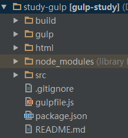
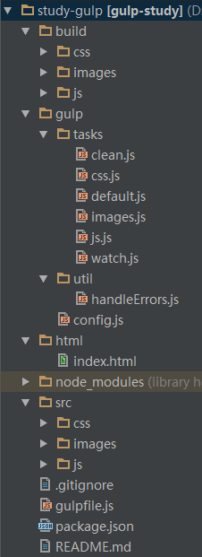
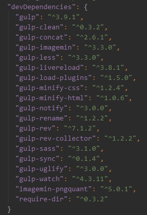

易于使用 通过代码优于配置的策略，Gulp 让简单的任务简单，复杂的任务可管理。
构建快速 利用 Node.js 流的威力，你可以快速构建项目并减少频繁的 IO 操作。
插件高质 Gulp 严格的插件指南确保插件如你期望的那样简洁高质得工作。
易于学习 通过最少的 API，掌握 Gulp 毫不费力，构建工作尽在掌握：如同一系列流管道。
gulp.src()方法是用来获取流的
gulp.dest()方法是用来写文件的
gulp.task()方法用来定义任务
gulp.watch()方法用来监视文件的变化
  
| url模块 路径 | |
|---|---|
| 代码 | 描述 |
| 压缩/编译css |
var gulp = require("gulp"); var plugins = require("gulp-load-plugins")(); var config = require("../config").css; var handleErrors = require("../util/handleErrors"); // build-css 编译css gulp.task("build-css", function(){ return gulp.src(config.src) .pipe(plugins.sass(config.settings)) .on("error", handleErrors) .pipe(gulp.dest(config.build)) }); // pack-css 压缩+编译css gulp.task("pack-css", function(){ return gulp.src(config.src) .pipe(plugins.sass(config.settings)) .on("error", handleErrors) .pipe(plugins.minifyCss()) .pipe(gulp.dest(config.build)); }); |
| 压缩/编译js |
var gulp = require("gulp"); var plugins = require("gulp-load-plugins")(); var config = require("../config").js; // build-js 编译js gulp.task("build-js", function(){ return gulp.src(config.src) .pipe(gulp.dest(config.build)); }); // pack-js 压缩+编译js gulp.task("pack-js", function(){ return gulp.src(config.src) .pipe(plugins.uglify()) .pipe(gulp.dest(config.build)); }); |
| 压缩/编译images |
var gulp = require("gulp"); var plunins = require("gulp-load-plugins")(); var config = require("../config").images; // build-images 压缩+编译images gulp.task("build-images", function(){ return gulp.src(config.src) .pipe(gulp.dest(config.build)); }); // pack-images 压缩+编译images gulp.task("pack-images", function(){ return gulp.src(config.src) .pipe(plunins.imagemin()) .pipe(gulp.dest(config.build)); }); |
| clean清除 |
var gulp = require("gulp"); var gulpPlugins = require("gulp-load-plugins")(); var config = require("../config").clean; // 清除该路径文件 gulp.task("clean", function(){ return gulp.src(config.build) .pipe(gulpPlugins.clean()); }); |
| watch监听 |
var gulp = require("gulp"); var watch = require("gulp-watch"); var config = require("../config"); // watch 监听 css、images、js文件，如果改变，则编译该路径下的文件 gulp.task("watch", function(){ watch(config.css.src, function(){ gulp.start("build-css"); }); watch(config.js.src, function(){ gulp.start("build-js"); }); watch(config.images.src, function(){ gulp.start("build-images"); }); }); |
| gulp压缩/编译全部 |
var gulp = require("gulp"); var gulpSync = require("gulp-sync")(gulp); // gulp 命令 默认执行 default // gulp deploy 命令 执行 deploy gulp.task("default", gulpSync.sync(["clean", ["build-css", "build-js", "build-images"], "watch"])); gulp.task("deploy", gulpSync.sync(["clean", ["pack-css", "pack-js", "pack-images"]])); |